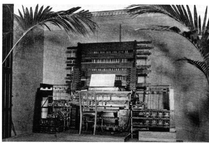
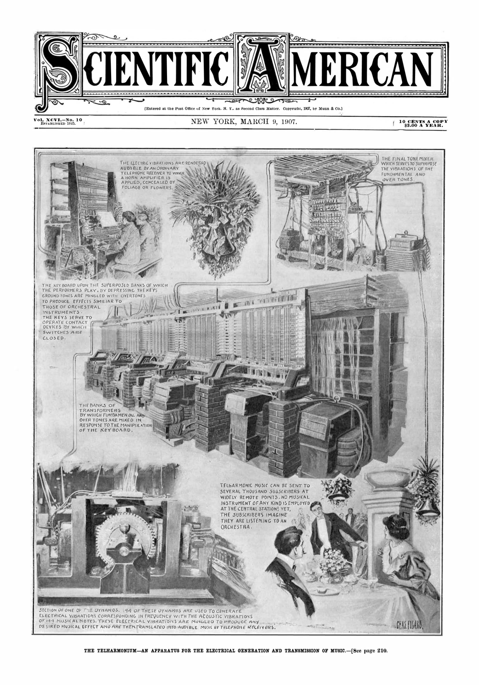

Noise Gift
Historically grounded physical modeling instruments and web-based creative audio tools. Built from primary sources. Anomalies are features.



← scroll to see all
VST Instrument Suite
Period-accurate physical modeling of rare historical instruments, each built from primary sources — patents, scholarly texts, original schematics — rather than timbral approximation. Demo mode uses instrument-characteristic interruptions rather than generic license prompts.
Completed or fully specced
- Sea Organ tube resonance, stochastic wave generation
- Daxophone modal blade synthesis, wolf tones preserved
- Audion Piano 1915 heterodyne oscillator, thermal drift
- Telharmonium additive synthesis, just intonation, telephone wire rolloff
- Elisha Gray Electro-Harmonic Telegraph odd harmonic additive synthesis
- Staccatone hard staccato only, no sustain
- Luminaphone selenium cell fatigue, tempo-synced rotation
- Clavecin Électrique Leyden jar as sole envelope system
- Sphäraphon kidney-plate condenser, patent as only timbral ground truth
- Mixtur-Trautonium Sala's subharmonic divider, four formant filters
- Choralcelo electromagnetic string excitation, no attack transient by design
- Orchestrion 11-voice mechanical ensemble, Performer and Paper Roll modes
Still being scoped
- Singing Arc
- Clavecin Magnétique
- Rhythmicon research complete, spec not yet written
Queued for later
- Croix Sonore
- Severy Sound-Producing Device
- Circuit Bending Suite
Noise Gift Web Tools
A set of web-based creative tools sharing the .ngft file format for cross-tool compatibility.
WORLDMANGLE
Audio mangling driven by real-world data streams: DOW close, geomagnetic index, extinction rates, and a conspiracy belief proxy. Demucs vocal separation, librosa beat slicing. A DOW reading above 50,000 triggers an undocumented behavior change.
Driftbook
Visual narrative platform for sequencing images, text overlays, and performance into evolving nonlinear story experiences. Three modes: Studio (authoring), Performance (live projection), Drift (authored nonlinear evolution and recurrence). Sequences loop, branch probabilistically, and evolve across passes while remaining authored and intentional. Built on Next.js, React, TypeScript, and Postgres. MIDI integration and graph-based sequencing in later phases.
Driftbook FX
Flipbook-metaphor effects plugin. Up to 20 image frames drive DSP at 30Hz via CoreImage analysis.
Driftorama
Live visual audio instrument where illustrated scenes function as the interface. Up to 10 scene elements control audio effects. Performances export as .wav files.
Shared Principles
- Anomalies are features, not bugs
- Historical gesture vocabulary drives UI design
- Physical accuracy over modern synth conventions
- WORLDMANGLE and Driftorama are the nearest-term demo priorities